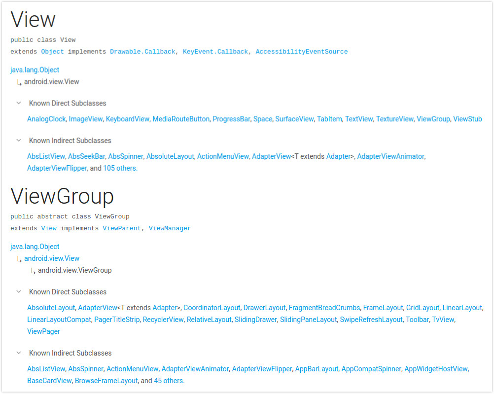

Android事件分发
众所周知，android视图框架由View和ViewGroup构成。ViewGroup是View的子类，是所有的布局类的父类，View是所有控件的父类。如下图所示的关系：

Android事件MotionEvent作为用户交互的媒介，包括点击，滑动，长按，拖拽等等。用户每次对屏幕操作动作都由三个最基本的动作构成，它们分别是ACTION_DOWN ACTION_MOVE和ACTION_UP。这一系列的动作操作被称为一个事件序列。比如说点击事件可以被分解为ACTION_DOWN -> ACTION_UP;滑动操作可以被分解为ACTION_DOWN -> ACTION_MOVE -> ACTION_MOVE -> … ->ACTION_MOVE -> ACTION_UP。可以肯定的是每一个事件序列都是以ACTION_DOWN开始。
我们都知道在手屏幕上呈现的多姿多彩的画面不是由一个或者两个View就能构成的，而是由不同的布局视图ViewGroup和不同的控件View一层一层嵌套形成的视图层级。这么多的View是如何接收到事件的呢？具体的事件又该真正的作用于哪个View呢？
这就需要Android强大框架支持了。为了解决这些问题恰恰需要Android提供一个强大的View事件分发机制。
View源码中提供了两个方法分别是public boolean dispatchTouchEvent(MotionEvent event)和public boolean onTouchEvent(MotionEvent event)而在ViewGroup源码中中发现不仅覆写了public boolean dispatchTouchEvent(MotionEvent event)而且还提供了一个public boolean onInterceptTouchEvent(MotionEvent ev)方法。在Activity的源码中也可以找到dispatchTouchEvent和onTouchEvent两个方法。
通过方法的名字大意上不难看出，它们就是分发事件和消耗事件的关键方法。下面通过实验来观察事件传递的过程。
View事件分发与处理
为了能在dispatchTouchEvent和onTouchEvent方法中打印日志，这里写两个类来分别继承Button和FrameLayout，分别命名为CustomButton和CustomLayout
|
|
布局文件代码如下：
在Activity中重写dispatchTouchEvent和onTouchEvent这两个方法，并且为customButton和customLayout添加点击事件和触摸事件。
启动这个demo后点击CustomButton得到的日志如下
从日志可以看出，事件DOWN首先从Activity中的dispatchTouchEvent方法中发出，接着到达视图层级的第一层CustomLayout，再到下一层CustomButton的dispatchTouchEvent。由于这一层已经是视图层级的最后一层了，日志中没有看到继续再往下一层分发反而是回调了在Activity中添加的onTouch事件。之后才调用CustomButton中的onTouchEvent方法。这样ACTION_DOWN事件就结束了，紧接着是ACTION_UP事件的传递过程和ACTION_DOWN过程一样，到最后才去回调CustomButton的onClick方法。从日志输出来看，这是一个典型的点击事件的在视图层级和Activity之间的传递过程。至于为什么会这样传递，还是要回归源码来找答案。
源码分析
先从Activity的dispatchTouchEvent方法入手：
从注释可以看出，该方法是屏幕事件的入口。如果想需要在将事件分发到window之前就拦截该事件，可以在子类中重写该方法。返回true就可以消费掉该事件，也就成功的拦截了该事件。
那么我们就试试在该方法下返回true，看看日志会怎么打印。
|
|
和注释中说的一模一样，后续视图层级不会收到事件，而视图的onClick和onTouch事件也得不到回调的机会。所以在开发中如果覆写了该方法还是要注意正常返回是否要拦截事件的逻辑。
继续分析源码，首先由ACTION_DOEN事件会调用onUserInteraction()方法，该方法是一个空实现，可以由子类来覆写，并且在接收到ACTION_DOWN事件后进行相应的操作。
getWindow().superDispatchTouchEvent(ev)方法主要是进行自定义window的事件分发过程，例如Dialog。
最后调用onTouchEvent方法。
从注释来看，如果视图层级中没有任何视图去操作该事件，该方法是非常有用的，主要用于不在window范围内的视图。并且它默认都是返回false。
当返回false时将把事件继续往下一层进行分发。这里直接看View的dispatchTouchEvent方法。
从代码中可以看到，先是进行聚焦检查，再通过事件DOWN的检查来停止当前的滑动效果，这些都不是重点。接下来onFilterTouchEventForSecurity(event)进行检查当前window是否被覆盖，若没有的话就切入重点了。首先是进行很多条件的判断，ListenerInfo类是一个包装了很多监听事件的内部类，其中就包括了OnTouchListener和OnClickListener，所以一旦为View设置了setOnTouchListener监听事件的话，li != null && li.mOnTouchListener != null && (mViewFlags & ENABLED_MASK) == ENABLED && li.mOnTouchListener.onTouch(this, event)前三个条件都会成立，故该View的onTouch会被回调的。若在该回调函数中返回true就不会再去调用当前的onTouchEvent方法了。而在onTouchEvent方法中我们有可以看到什么呢？继续追踪源代码。
|
|
这里代码很长，选取了其中的一部分来分析。这里监听到ACTION_UP事件后会调用performClick方法。
到这里就真相大白了，performClick方法就是进行onClick事件回调的入口（当然前提是设置了OnClickListener）。
在最开始的demo中，我们为每一个视图层级的和Activity的dispatchTouchEvent只进行了日志打印工作没有改变其返回的值，直接是默认的调用其父类的dispatchTouchEvent方法返回其父类的值。而在分析Activity的dispatchTouchEvent方法的时候我们在demo中返回了true后直接导致了View视图层级没有收到事件也接收不到onTouch和onClick的回调操作。
这时我们在回过头来看一下View的onTouchEvent代码，在if判断语句中，只要当前的操作是CLICKABLE点击或者LONG_CLICKABLE长按最后都会返回true继而其对应的dispatchTouchEvent就会返回true这也意味着该事件不会继续向下传递。
为了验证这个结果，我们在demo中为CustomLayout的dispatchTouchEvent返回一个true，再去看看打印结果。下面给出修改后的代码以及日志输出情况：
|
|
和分析的结果一样，如果在CustomLayout的dispatchTouchEvent方法中返回true（这也意味着在该视图层级的onTouchEvent中消费了这个事件，否则这是无意义的事情）时，事件将不会继续向下传递。
ViewGroup事件分发与处理
现在我们假设在CustomLayout类的dispatchTouchEvent方法中接收到ACTION_DOWN事件后直接返回true接收其他的动作还是继续派发。如下代码所示
按照常理来说事件传递顺序应该是这样的：Activity（d : D） -> CustomLayout(d : D);Activity(d : U) -> CustomLayout(d : U) -> CustomButton(d : U) -> Activity(onTouch : U) -> CustomButton(t : U) -> Activity(onClick)
(d : D) 代表
dispatchTouchEvent和ACTION_DOWN
(t : U) 代表onTouchEvent和ACTION_UP
那么我们看一下日志，事件到底是怎么传递的呢？
ACTION_DOWN事件和想象的一样，但是对于ACTION_UP事件来说，它没有传递到下一个视图层级而是直接由CustomLayout的onTouchEvent消费掉。这又是为什么呢？看来真相还得去看源代码。ViewGroup覆写了View的dispatchTouchEvent方法，我们就看看到底在这里搞了什么鬼。
|
|
当接收事件为actionMasked == MotionEvent.ACTION_DOWN时会调用cancelAndClearTouchTargets和resetTouchState分别用于清除touch目标和重置touch状态。这里维护了一个mFirstTouchTarget成员变量来用于清除touch目标和touch状态。
接下来会通过actionMasked == MotionEvent.ACTION_DOWN || mFirstTouchTarget != null两个条件判断是否拦截当前的事件，第一个条件很好理解但是对于mFirstTouchTarget != null是什么意思呢？现在暂时看不出来，那么我们继续往下看。
先略过中间这大段，直接看判断语句if (mFirstTouchTarget == null) {...} else {...}这段是将事件向子视图进行分发的逻辑，可以看到当事件由ViewGroup子元素成功处理时，mFirstTouchTarget会被赋值。这时候在回过头看，如果一旦由ViewGroup将事件拦截了mFirstTouchTarget必然不会被赋值因此就不会满足mFirstTouchTarget != null条件。当除ACTION_DOWN之外的事件传进来的时候就不会去调用onInterceptTouchEvent方法。该方法正式ViewGroup进行拦截事件的重要方法，但是从上面的分析中得出：如果在ACTION_DOWN事件中就返回true那么接下来的事件序列将不会在调用onInterceptTouchEvent方法，而是直接默认拦截该事件。所以在开发中，如果要判断滑动事件满足某一条件时进行拦截操作的话，一定不能在onInterceptTouchEvent方法的ACTION_DOWN事件的时候就返回true。
在ViewGroup中默认的onInterceptTouchEvent方法至返回false。拦截操作要在子类中完成。
上述分析的结果也正好吻合我们日志中打印的结果，我们在CustomLayout中dispatchTouchEvent的ACTION_DOWN事件下返回了true，这就意味着要拦截当前的事件，导致mFirstTouchTarget == null，在之后的事件序列中也默认的走else { intercepted = true; }的代码块，也就是拦截了。
接下来看一看ViewGroup不拦截事件的时候，它是怎么交给子View进行处理的。首先通过遍历拿到子元素for (int i = childrenCount - 1; i >= 0; i--) {...}在循环代码块中进行一系列的判断包括子元素是否在播放动画或者点击坐标是否在子元素区域内。如果子元素满足了这两个条件，就会将事件传递给该子元素。
dispatchTransformedTouchEvent方法是将事件传递给子元素的入口，我们看一下具体代码：
经过以上源码+Demo的分析我们知道了View事件分发机制，接下来就上篇博客中的自定义滑动控件的bug进行修复。
实践开发
上篇博客中自定义滑动View存在这样一个bug，当手指按到中间的按钮区域的时候在进行滑动将会出现滑不动的情况。经过上述对View事件分发机制的了解，很容易就知道产生这个bug的原因。
由于没有在自定义ViewGroup进行事件拦截操作，当手指点击到按钮区域时候将会被按钮的onTouchEvent消费该事件，故在传入ACTION_UP事件的时候也会被按钮区域的View消费掉。所以我们在StretchScrollView类中完善onInterceptTouchEvent方法。
在MotionEvent.ACTION_MOVE事件中，判断是否上下滑动，如果是就拦截该事件进行上下滑动的操作。这样就解决了手指按住按钮区域时无法滑动的bug。
总结
以上就是android中View事件分发机制的过程分析，由于代码繁多且复杂，有些方法以及逻辑还是不能全部搞懂。但是通过以上的分析对于实践开发已经足够了。
- Android事件分发首先由
Activity开始到window的视图层级，进行一层一层的分发。 - 事件通过
dispatchTouchEvent方法进行分发，可以通过onTouchEvent进行消费工作，对于ViewGroup来说可以通过onInterceptTouchEvent进行事件拦截操作。 - 如果在
ViewGroup把ACTION_DOWN事件拦截了，那么后续的事件序列默认都将被该ViewGroup拦截并且不会再去调用onInterceptTouchEvent方法来判断是否拦截。 onTouch回调要先于onTouchEvent被调用，它是在dispatchTouchEvent方法体中被调用的。而onClick事件是在最后才被调用，它的调用时机是在onTouchEvent方法体中。